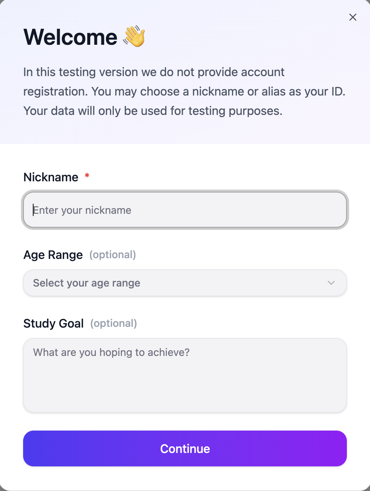
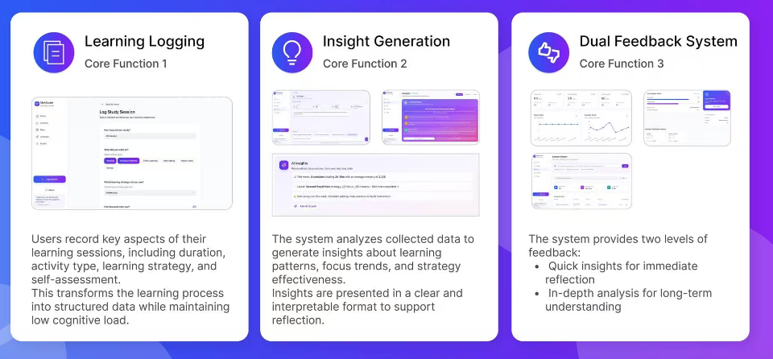

Thesis Project at NYU Steinhardt
MetriLearn
MetriLearn is an AI-powered learning reflection platform that helps adult learners better understand and improve their study habits. By combining learning analytics with AI-generated insights, the platform transforms study data into personalized feedback that encourages reflection, supports self-regulated learning, and promotes continuous improvement.

Role
UX Research · UX Design · Front-end Development
Duration
14 Weeks
Team
2 Designers
The Challenge
Existing learning platforms focus on tracking progress rather than helping learners understand their study habits. Without meaningful reflection and actionable feedback, many students struggle to identify ineffective learning strategies and improve their long-term learning habits.
During our initial research, we discovered that learners often measured success by grades or hours spent studying but had little understanding of whether their learning strategies were actually effective. Although study data was readily available, it rarely translated into meaningful insights that could guide future learning.
This revealed an opportunity to design a platform that goes beyond tracking performance by helping learners interpret their behaviors, recognize learning patterns, and receive personalized feedback that supports continuous improvement.
Research & Discovery
Before exploring solutions, we conducted mixed-methods research to understand learners' study habits, reflection behaviors, and opportunities for AI to provide meaningful support.
6 Interviews
Students, educators, and instructional designers
35 Survey Responses
Learning habits, reflection behaviors, and AI expectations
4 Competitive Analyses
Identified gaps in existing learning platforms and opportunities for AI-assisted reflection.
Key Insights
Learners struggled to evaluate their study habits.
Most participants measured progress through grades or study time, making it difficult to determine whether their learning strategies were actually effective.
Students wanted meaningful feedback, not more data.
Participants preferred personalized insights and actionable recommendations over dashboards filled with statistics.
Trust and transparency shaped AI adoption.
Learners were open to AI-generated feedback when recommendations were easy to understand and users maintained control over their own learning data.
Final Solution
Guided by our research findings, we designed MetriLearn to help learners better understand and improve their learning process through AI-assisted reflection. The platform brings together learning logging, AI-generated insights, and a dual feedback system to encourage meaningful reflection and continuous improvement.

What This Project Demonstrates
Through this project, I developed the ability to translate learning data into actionable insights by balancing AI capabilities with real user needs. Rather than presenting more information, I focused on helping learners understand their behaviors and make informed decisions about how they learn.
This experience strengthened my approach to designing AI-powered, data-driven products where clarity is just as important as functionality. It reinforced my belief that good design is not about adding complexity, but about making information easier to understand, interpret, and act on.